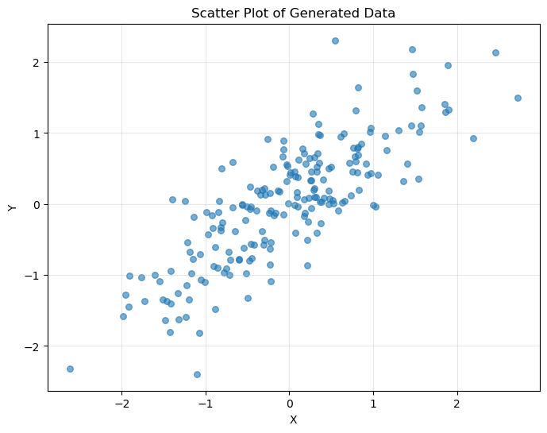
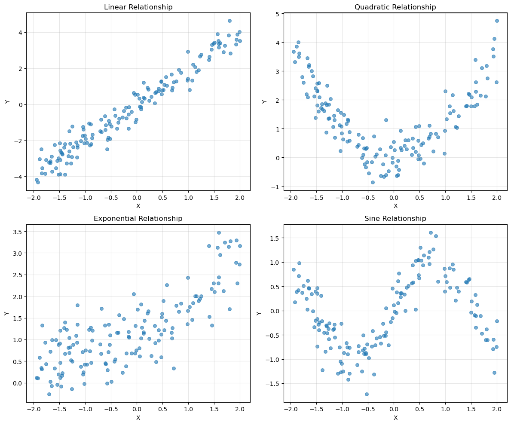

The weighted dependence measures (wdm) API
This notebook demonstrates how to compute various dependence measures using the wdm function in pyvinecopulib, both with and without observation weights.
Available Dependence Measures
The wdm function supports several dependence measures: - Pearson correlation ("pearson", "prho", "cor") - Spearman’s ρ ("spearman", "srho", "rho") - Kendall’s τ ("kendall", "ktau", "tau") - Blomqvist’s β ("blomqvist", "bbeta", "beta") - Hoeffding’s D ("hoeffding", "hoeffd", "d")
[1]:
import numpy as np
import matplotlib.pyplot as plt
import pyvinecopulib as pv
# Set random seed for reproducibility
np.random.seed(42)
1. Basic Usage: Unweighted Dependence Measures
Let’s start with some example data and compute various dependence measures.
[2]:
# Generate correlated data
n = 200
x = np.random.normal(0, 1, n)
y = 0.7 * x + np.random.normal(0, 0.5, n)
# Compute various dependence measures
measures = {
"Pearson": pv.wdm(x, y, "pearson"),
"Spearman": pv.wdm(x, y, "spearman"),
"Kendall": pv.wdm(x, y, "kendall"),
"Blomqvist": pv.wdm(x, y, "blomqvist"),
"Hoeffding": pv.wdm(x, y, "hoeffding"),
}
print("Unweighted Dependence Measures:")
print("=" * 35)
for name, value in measures.items():
print(f"{name:12}: {value:.4f}")
Unweighted Dependence Measures:
===================================
Pearson : 0.8180
Spearman : 0.8057
Kendall : 0.6097
Blomqvist : 0.6000
Hoeffding : 0.2696
[3]:
# Visualize the data
plt.figure(figsize=(8, 6))
plt.scatter(x, y, alpha=0.6, s=30)
plt.xlabel("X")
plt.ylabel("Y")
plt.title("Scatter Plot of Generated Data")
plt.grid(True, alpha=0.3)
plt.show()

2. Weighted Dependence Measures
Now let’s explore how weights affect the dependence measures. We’ll use different weighting schemes to demonstrate the functionality.
[4]:
# Example 1: Uniform weights (should give same result as unweighted)
weights_uniform = np.ones(n)
print("Uniform Weights vs Unweighted:")
print("=" * 35)
for method in ["pearson", "spearman", "kendall"]:
unweighted = pv.wdm(x, y, method)
weighted = pv.wdm(x, y, method, weights_uniform)
print(f"{method.capitalize():12}: {unweighted:.6f} vs {weighted:.6f}")
Uniform Weights vs Unweighted:
===================================
Pearson : 0.818019 vs 0.818019
Spearman : 0.805694 vs 0.805694
Kendall : 0.609749 vs 0.609749
[5]:
# Example 2: Linear weights (more weight on later observations)
weights_linear = np.linspace(0.1, 2.0, n)
print("\nLinear Weights (0.1 to 2.0):")
print("=" * 35)
for method in ["pearson", "spearman", "kendall"]:
unweighted = pv.wdm(x, y, method)
weighted = pv.wdm(x, y, method, weights_linear)
print(f"{method.capitalize():12}: {unweighted:.4f} -> {weighted:.4f}")
Linear Weights (0.1 to 2.0):
===================================
Pearson : 0.8180 -> 0.8138
Spearman : 0.8057 -> 0.7929
Kendall : 0.6097 -> 0.5965
[6]:
# Example 3: Half-zero weights (focus on second half of data)
weights_half_zero = np.zeros(n)
weights_half_zero[n // 2 :] = 1.0
print("\nHalf-Zero Weights (second half only):")
print("=" * 45)
for method in ["pearson", "spearman", "kendall"]:
weighted_result = pv.wdm(x, y, method, weights_half_zero)
second_half_result = pv.wdm(x[n // 2 :], y[n // 2 :], method)
print(
f"{method.capitalize():12}: {weighted_result:.6f} (weighted) vs {second_half_result:.6f} (second half)"
)
print(
f" Difference: {abs(weighted_result - second_half_result):.2e}"
)
Half-Zero Weights (second half only):
=============================================
Pearson : 0.830812 (weighted) vs 0.830812 (second half)
Difference: 0.00e+00
Spearman : 0.809241 (weighted) vs 0.809241 (second half)
Difference: 0.00e+00
Kendall : 0.615354 (weighted) vs 0.615354 (second half)
Difference: 0.00e+00
3. Comparison of Dependence Measures
Let’s compare how different dependence measures behave with various types of relationships.
[7]:
# Generate different types of relationships
n_comp = 150
x_base = np.random.uniform(-2, 2, n_comp)
relationships = {
"Linear": 2 * x_base + np.random.normal(0, 0.5, n_comp),
"Quadratic": x_base**2 + np.random.normal(0, 0.5, n_comp),
"Exponential": np.exp(x_base / 2) + np.random.normal(0, 0.5, n_comp),
"Sine": np.sin(2 * x_base) + np.random.normal(0, 0.3, n_comp),
}
print("Dependence Measures for Different Relationships:")
print("=" * 55)
print(
f"{'Relationship':<12} {'Pearson':<8} {'Spearman':<8} {'Kendall':<8} {'Hoeffding':<10}"
)
print("-" * 55)
for name, y_rel in relationships.items():
pearson = pv.wdm(x_base, y_rel, "pearson")
spearman = pv.wdm(x_base, y_rel, "spearman")
kendall = pv.wdm(x_base, y_rel, "kendall")
hoeffding = pv.wdm(x_base, y_rel, "hoeffding")
print(
f"{name:<12} {pearson:<8.3f} {spearman:<8.3f} {kendall:<8.3f} {hoeffding:<10.6f}"
)
Dependence Measures for Different Relationships:
=======================================================
Relationship Pearson Spearman Kendall Hoeffding
-------------------------------------------------------
Linear 0.975 0.973 0.860 0.687903
Quadratic -0.046 -0.149 -0.118 0.125984
Exponential 0.780 0.743 0.558 0.232443
Sine 0.268 0.263 0.157 0.085145
[8]:
# Visualize the different relationships
fig, axes = plt.subplots(2, 2, figsize=(12, 10))
axes = axes.ravel()
for i, (name, y_rel) in enumerate(relationships.items()):
axes[i].scatter(x_base, y_rel, alpha=0.6, s=30)
axes[i].set_xlabel("X")
axes[i].set_ylabel("Y")
axes[i].set_title(f"{name} Relationship")
axes[i].grid(True, alpha=0.3)
plt.tight_layout()
plt.show()
